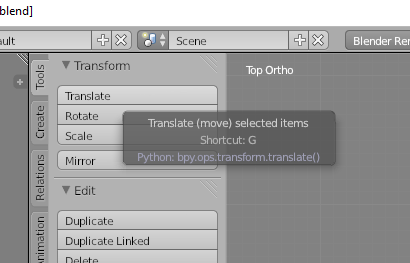
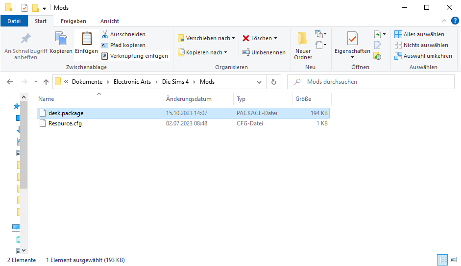

What
Using the approach I’ve described previously to create 3D models we can also create custom content for the game Sims 4.
The desk in the image is a custom 3D model inspired by my actual desk.
Contents
Contents
When
The process is actually quite straight-forward with an already existing 3D model. It does take a lot of clicking around in the tools involved.
3D models can either be custom made, exported from other games or from, for example, 3D printing sites.
There is lots of room for creativity here.
Why
I’m particularly interested in the game, but my girl friend plays it and we’re in the market for housing and so sometimes we use it to try out architectural designs of houses we’re interested in.
Imagining how it would be like to live in particular house with a specific floor plan and how our paths through the house would be works a lot better with models of actual furniture.
Background
Background
With the 3D modeling approach using the open-source tools OpenScad, Gimp and Blender we can produce Wavefront *.obj files and the corresponding *.mtl material files and *.png textures.
For that guide I’ve used Blender 3.6.3. To edit Sims 4 game files we will need another tool called “Sims 4 Studio”. It can be downloaded online and I’ll be using version 3.1.6.3. Unfortunately that version only works with Blender 2.7x. I’ll use 2.70a.
After creating the 3D Model in Blender 3.6.3 following my other guide, we continue with Sims 4 Studio and Blender 2.7x.
How
Importing a 3D Model into the game
Starting out you need a finished 3D model of something.
You’ll need an export of the wavefront *.obj, material *.mtl and texture *.png files of that model.
I’m using a model of my desk that I’ve made previously.
Create a new Project
Download and then open Sims 4 Studio
Enter a creator name in the bottom right or it will not work.
Select “Create 3D Mesh” and click on “Object”
Select some furnature that serves a similar purpose to what you are planing to add.
That’s important, because by using an existing object and adjusting ours to it we know it will be scaled and aligned properly in the game later on
Sims 4 Studio will ask to save it somewhere.
We then click on “export mesh”.
Install Blender
Sims4 Studio calls the Blender 2.7 by API. If it can’t find it, it will come back with an error.
In that case install Blender.
Export again.
If it works Sims 4 will produce a *.blend file.
Load the exported project in Blender
We load Blender
and open that file
Import the 3D model
Next we can import our own 3D model
Scale
Probably it’s in correctly scaled.

Scaling in Blender 2.7 works differntly than in Blender 3.6.
Without touching anything we need to click on “Scale” in the middle column.
We can then enter numbers in the bottom of the middle column.
Align
In order to align its easiest to cycle through “top”, “left” and “front” views.
For this, in the bottom of the screen under the middle column click on the “view” menu and select “Top”.
We can then click “translate” - translate means move.

And punch in the numbers in the bottom of the middle column.
I usually write the numbers down in case I have to quickly redo the work.
We can move the object axes by axes this way. Every time going to “View” -> Side, Front, Top first.
Removing the original Mesh
Next we need to remove the original desk.
It actually took me quite some time to figure this one out.
Move it away
We can do this by selecting the mesh of the original Sims desk in the menu in the top right corner.
Then select “translate”.
And move it away
Switch to Edit mode
To delete an Object we need to switch from “Object Mode” to “Edit Mode” from the menu at the bottom of the screen.
Change Selection Behaviour
We need to change the selection behaviour to select not only the top vertices, but also select vertices behind it.
To do this there is a really hard to find button in the bottom right of the screen that says “limit selection to visible” when you hover over it.
Disable that.
Select what we want to remove
To select open the “Select” menu and click on “Border Select”.
Now you can select the old model by clicking and dragging.
Remove
And press “Del” on the keyboard to open the delete menu.
Select “Edges”
and it should be gone. Save the result
Load in Sims 4 Studio
Go back to Sims 4 Studio
Open the project
and click on “Import Mesh”
Wait for it to import
We can see it’s imported, but using the texture from the old model.
On the right switch to the “texture” tab.
Click on “import” there
In the file browser select the texture file and click “Open”
The Sims 4 table I used had a second texture for a desk matt.
Since I’m not using it I created a second texture in the color of the surface of my desk and set that as the second texure.
You can also see that desk matt in the blender model.
We need to import the mesh also for the other “Level of Detail” (LOD).
Then in the “Catalog” tab add an adequate description
and then save the result.
Adding it to the game
Copy the exported *.package file to
C:\Users\<username>\Documents\Electronic Arts\The Sims 4\ Mods\"
Load the game

Under settings allow “Custom Content”
Don’t forget to click “apply”. The button is strangely located.
It will ask to restart the game
Reopening it will show a list of mods that should mention the new package we’ve created.
Using it in the game
In the game we can now access the model from the “Build Mode”
It will show up along side the other desks in the game
And, as long as we didn’t destroy the anchor points during edits in Blender, we can place obects on the desk as with the other desks in the game.
And make it look like the image from above
Progress
Conclusion
Following those steps we can get any 3D model into the game and extend it.